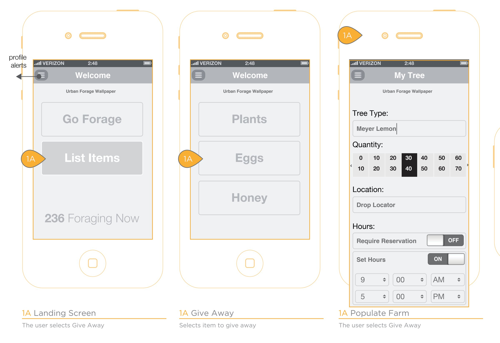
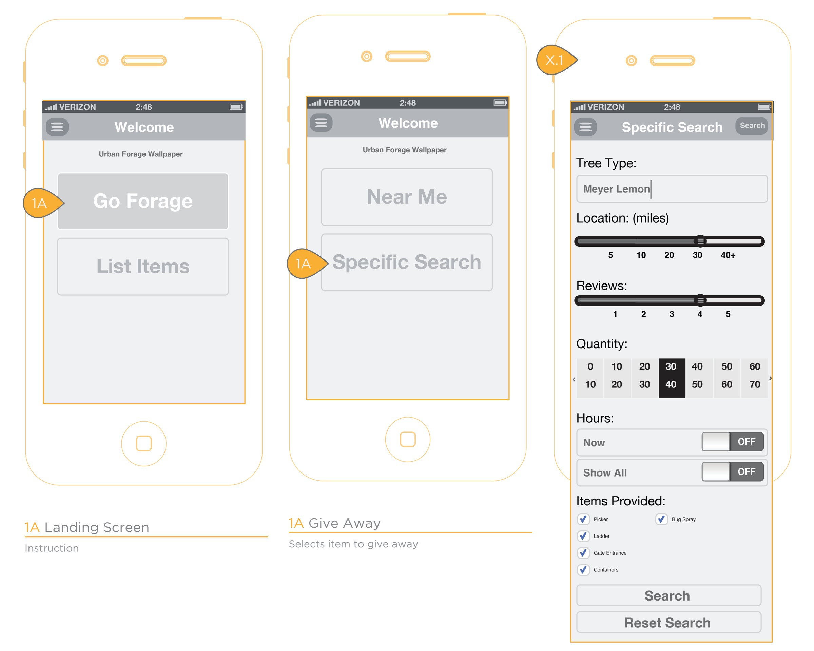
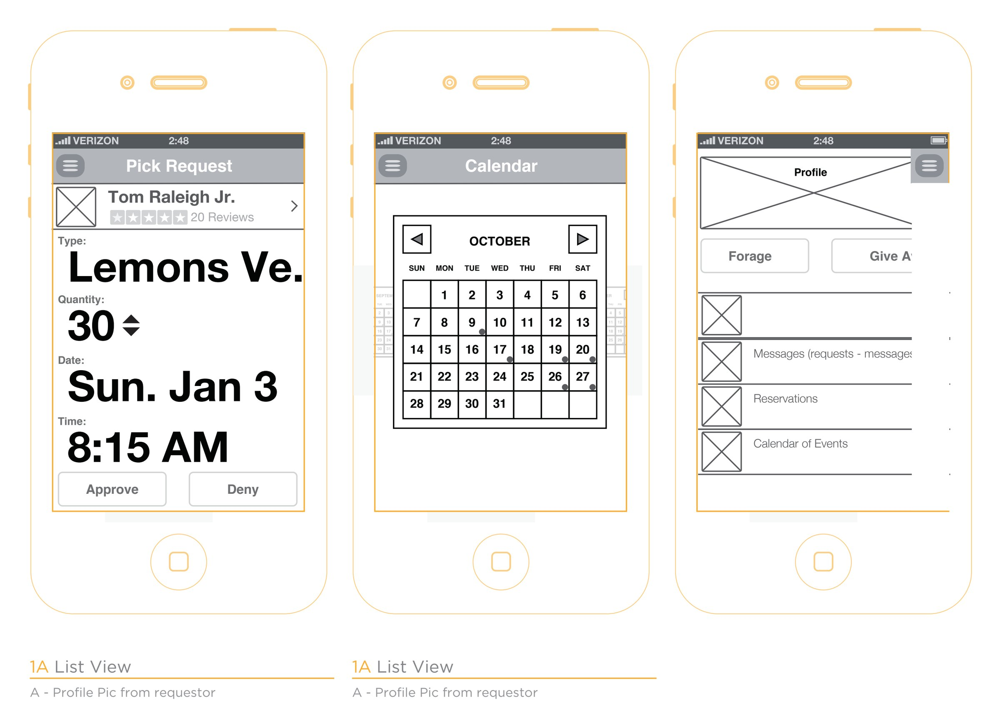
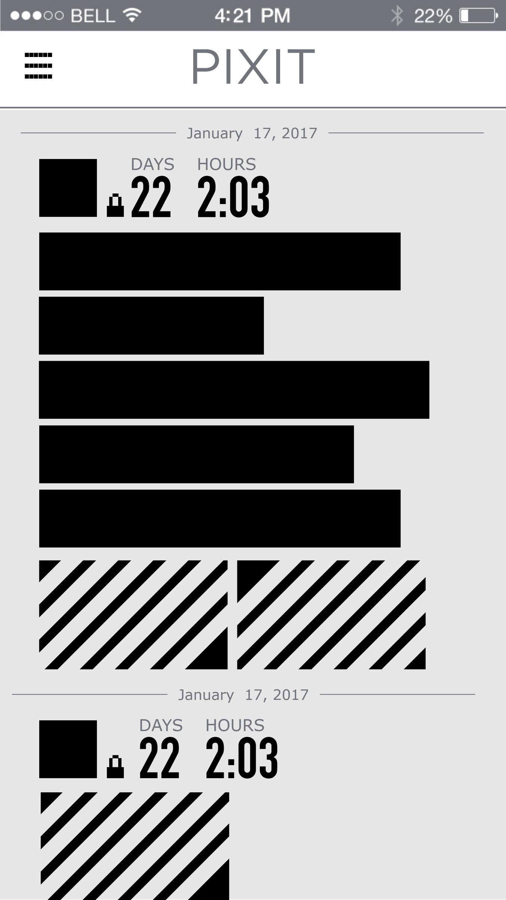
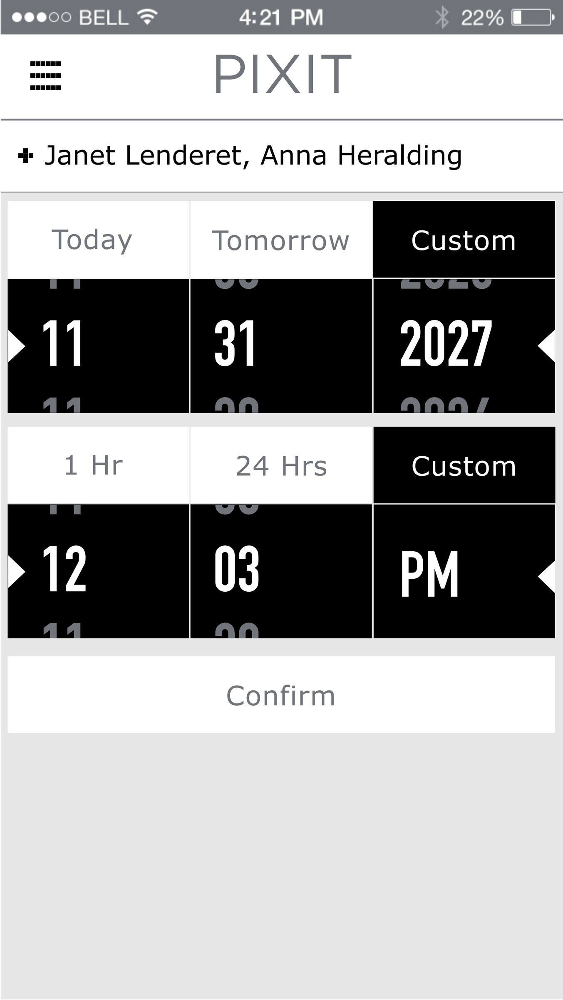

App concepts, 2009
Mobile app concepts developed in the studio: Forage, for sharing and picking produce from local trees and growers, and Pixit, a time-locked photo messaging app.

The problem
Studio-initiated mobile product concepts, each defined through annotated flows and screens.
The approach
Forage connects people who have fruit trees, eggs or honey to give away with people who want to pick them. Annotated wireframes cover listing items with quantity, location and hours, searching by type, distance and reviews, and requesting, approving and scheduling a pick.
Pixit is a photo messaging concept in which a message stays locked until a date and time the sender sets. Screens show the locked-message thread with a countdown and the unlock-time picker.




Leadership
Directed the studio's concept work on these apps, from flows to screen design.